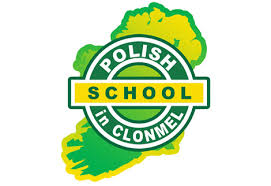
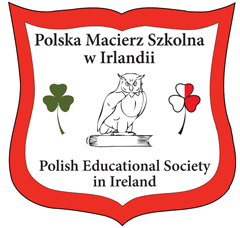
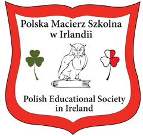

 Polish School in Clonmel
Organization of afternoon classes in Polish for children from Clonmel, southern Ireland and the surrounding area. Organization consists of activities in History and Mathematics that help Polish children have more of equal chances just as in Irish schools.
Clonmel Polish school was first set up in the year of 2009 and since then has been in operation for the past 9 years offering education from first class in primary school up to preperation for the Leaving Certificate in secondary school. We offer high quality teaching with our highly skilled staff and every child will feel just as home. In 2017 we opened another facility in Cashel but unfortunately it closed at the begining in 2018.
Polish School in Clonmel was first set up due to parents that demanded their children to be taught but unfortunately there were many limitations and obstacles but in the end many parents signed their children which gave huge benefits as it would be the same as in Poland but in Ireland which would give equal chnaces for everyone.
It is a well established non-profit school that is compiled with the Irish law and offers weekday Polish, history and maths lessons as opposed to weekend lessons and avoiding transport to Waterford, Cork, Limerick or even Dublin. The aim is to teach and prepare students for the Leaving Certificate and hence making highly qualified people in the long run. Also from the year 2012 we are a member of the Polish Educational Society in Ireland. It is about Polish Educational Society in Ireland (PESI) is a unique Polish educational organisation in the Republic of Ireland established in 2012. PESI embraces Polish supplementary schools in Ireland and widely cooperates with Polish government bodies and organisations working for the maintenance and promotion of Polish language abroad. Polish Educational Society in Ireland is a non-profit organisation, an independent NGO - limited company registered with CRO (525504).
It's goals are:
To promote Polish language and Poland
To increase the quality of Polish Schools
To support Polish schools
To represent Polish schools, their staff, learners and parents
To cooperate with Irish and Polish educational organisations in order to support Polish pupils residing in Ireland

 
